ПОИСК НЕИСПРАВНОСТЕЙ В СИСТЕМАХ, УПРАВЛЯЕМЫХ ЭБУ > ПОРЯДОК ПРОВЕРКИ ЭЛЕКТРОННЫХ ЦЕПЕЙ |
| ОСНОВНАЯ ПРОВЕРКА |
УСЛОВИЯ ИЗМЕРЕНИЯ СОПРОТИВЛЕНИЯ ЭЛЕКТРОННЫХ ЦЕПЕЙ
Если нет иных указаний, все измерения сопротивления должны осуществляться при температуре окружающего воздуха 20°C (68°F). При высоких температурах, например, немедленно после движения автомобиля, измерения сопротивления могут быть неточными. Измерения следует выполнять после того, как двигатель остынет.
| 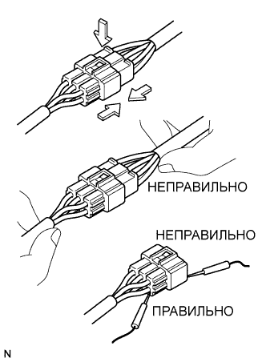 |
КАК ОБРАЩАТЬСЯ С РАЗЪЕМАМИ
При отсоединении разъема вначале плотно сожмите вместе половинки корпуса ответной части, чтобы освободить замок, а затем нажмите на защелку замка и отсоедините разъем.
При отсоединении разъема не тяните за жгут проводов. Возьмитесь непосредственно за разъем и отсоедините его.
Перед подсоединением разъема убедитесь в отсутствии деформированных, поврежденных, ненадежных или недостающих контактов.
При подсоединении разъема твердо нажимайте на него, пока он не будет зафиксирован с щелчком.
Проверку разъема с помощью электрического диагностического прибора TOYOTA осуществляйте с обратной стороны (сторона жгута проводов), используя миниатюрные щупы.
| 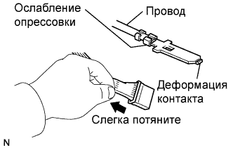 |
ПРОВЕРКА РАЗЪЕМОВ
Проверка при подсоединенном разъеме: Сожмите разъемы, чтобы удостовериться, что они полностью подсоединены и зафиксированы.
Проверка при отсоединенном разъеме: Выполните проверку, слегка потянув за жгут проводов с обратной стороны разъема. Проверьте наличие свободных контактов, отсутствующих контактов, незатянутых обжимов и разорванных проводов. Осмотрите разъем на предмет наличия коррозии, металлических или посторонних частиц и влаги, а также погнутых, ржавых, перекаленных, загрязненных и деформированных контактов.
 |
Проверка контактного давления контакта: Приготовьте запасной штыревой контакт. Вставьте его в гнездовой контакт и проверьте плотность посадки при вставке и полном соединении.
| 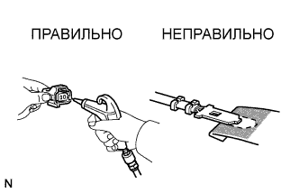 |
СПОСОБЫ РЕМОНТА КОНТАКТОВ РАЗЪЕМА
Если на контакте имеются загрязнения, очистите контактную поверхность сжатым воздухом или тканью. Никогда не трите контактную поверхность наждачной бумагой, так как при этом может сойти покрытие.
В случае ненормального контактного давления замените гнездовой контакт. Если штыревой контакт позолочен (золотистого цвета), используйте позолоченный гнездовой контакт, а если он посеребрен (серебристого цвета) – посеребренный гнездовой контакт.
Необходимо заменить поврежденные, деформированные и ржавые контакты. Если контакт не фиксируется в корпусе, может потребоваться заменить корпус разъема.
| 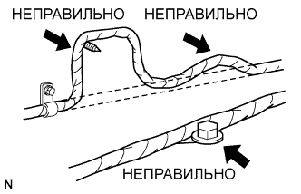 |
РАБОТА СО ЖГУТАМИ ПРОВОДОВ
При снятии жгута проводов вначале отметьте расположение проводов и зажимов, чтобы при сборке можно было восстановить исходное состояние.
Скручивать, тянуть и ослаблять жгут проводов разрешается только в допустимых пределах.
Жгут проводов никогда не должен соприкасаться с нагретыми, вращающимися, движущимися, вибрирующими и острыми деталями. Не допускайте контакта с кромками панелей, наконечниками винтов и другими острыми деталями.
При установке деталей не допускайте сжатия жгута проводов.
Никогда не режьте и не рвите обмотку жгута проводов. При повреждении обмотки замените ее или отремонтируйте при помощи виниловой ленты.
| ПРОВЕРКА ЦЕПЕЙ НА ОБРЫВЫ |
| 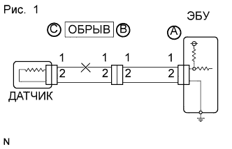 |
Для проверки жгута проводов на обрыв (см. рис. 1) проверьте сопротивление или напряжение, как описано ниже.
| 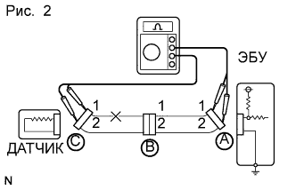 |
Проверьте сопротивление.
Отсоедините разъемы “A” и “C” и измерьте сопротивление между ними.
| Контакты для подключения диагностического прибора | Заданные условия |
| Контакт 1 разъема A – контакт 1 разъема C | 10 кОм или более |
| Контакт 2 разъема A – контакт 2 разъема C | Менее 1 Ом |
| 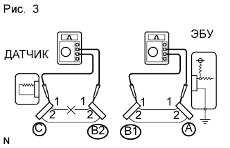 |
Отсоедините разъем B и измерьте сопротивление между разъемами.
| Контакты для подключения диагностического прибора | Заданные условия |
| Контакт 1 разъема A – контакт 1 разъема B1 | Менее 1 Ом |
| Контакт 1 разъема B2 – контакт 1 разъема C | 10 кОм или более |
| 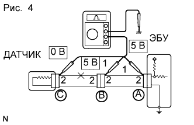 |
Проверьте напряжение.
Для цепи под напряжением, которое подается на контакт разъема ЭБУ, наличие обрыва можно определить, проверив напряжение.
Когда все разъемы подсоединены, измерьте напряжение между массой и указанными контактами в следующем порядке. 1) контакт 1 разъема A, 2) контакт 1 разъема B, 3) контакт 1 разъема C.
| Контакты для подключения диагностического прибора | Заданные условия |
| Контакт 1 разъема A – масса | 5 В |
| Контакт 1 разъема B – масса | 5 В |
| Контакт 1 разъема C – масса | Менее 1 В |
| ПРОВЕРКА НА КОРОТКОЕ ЗАМЫКАНИЕ |
| 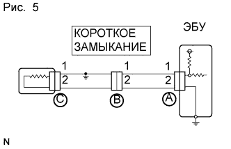 |
Если жгут проводов замкнут на массу (рис. 5), определить место замыкания можно, выполнив проверку сопротивления относительно массы, как рассмотрено ниже.
| 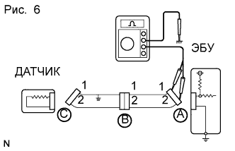 |
Проверьте сопротивление относительно массы.
Отсоедините разъемы A и C и измерьте сопротивление.
| Контакты для подключения диагностического прибора | Заданные условия |
| Контакт 1 разъема A – масса | Менее 1 Ом |
| Контакт 2 разъема A – масса | 10 кОм или более |
| 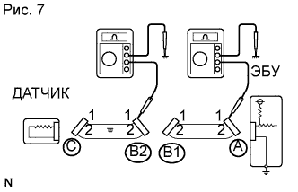 |
Отсоедините разъем B и измерьте сопротивление.
| Контакты для подключения диагностического прибора | Заданные условия |
| Контакт 1 разъема A – масса | 10 кОм или более |
| Контакт 1 разъема B2 – масса | Менее 1 Ом |
| ПРОВЕРКА И ЗАМЕНА ЭБУ |
Вначале проверьте цепь соединения ЭБУ с массой. При наличии неисправности устраните ее. Если цепь исправна, возможна неисправность ЭБУ. Временно замените ЭБУ рабочим и проверьте, не сохранились ли признаки неисправности. Если признаки неисправности исчезли, замените первоначальный ЭБУ.
| 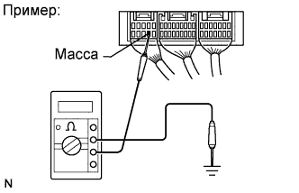 |
Измерьте сопротивление между контактом массы ЭБУ и массой кузова.
| 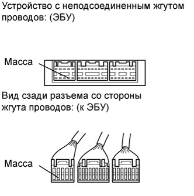 |
Отсоедините разъем ЭБУ. Проверьте контакты массы со стороны ЭБУ и жгута проводов на наличие перегибов, коррозии и посторонних веществ. Наконец, проверьте контактное давление гнездовых контактов.